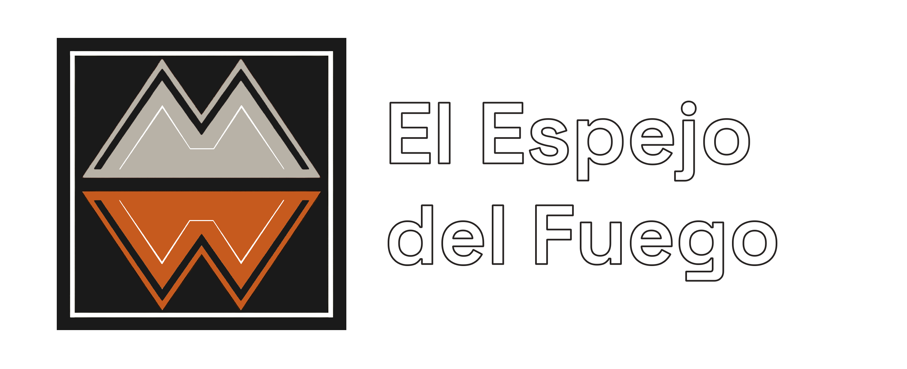

El que guarda siempre tiene: agua disponible antes de una emergencia
Una práctica doméstica sostenida en el tiempo que se transforma en preparación concreta frente a cortes de suministro e incendios.
Leer historia
Relatos sobre cómo las decisiones cotidianas, las prácticas locales y los aprendizajes territoriales influyen en la forma de convivir con el riesgo de incendios forestales.
Esta sección reúne crónicas y relatos sobre personas, familias y comunidades que enfrentan el riesgo de incendios forestales desde su vida cotidiana. Algunas experiencias nacen de decisiones pensadas explícitamente para prepararse. Otras surgen por razones distintas, pero igualmente terminan reduciendo vulnerabilidades frente al fuego.
Relatos recientes que muestran distintas formas de preparación, adaptación y aprendizaje frente al fuego.
Una práctica doméstica sostenida en el tiempo que se transforma en preparación concreta frente a cortes de suministro e incendios.
Leer historiaUna lectura breve sobre los alcances y límites del agua como recurso de preparación territorial.
Leer notaLas historias del sitio se organizan en dos grandes grupos. La diferencia no está en su valor, sino en la intención con que surgieron y en la manera en que ayudan a reducir riesgo en el territorio.
Son acciones pensadas explícitamente para enfrentar incendios forestales: adaptaciones en viviendas, preparación para emergencias, organización de respuesta y medidas de autoprotección.
Explorar medidas directasSon prácticas que nacieron por otras razones, pero que igualmente disminuyen vulnerabilidades: mantenimiento del entorno, decisiones de uso del espacio y hábitos cotidianos con efecto preventivo.
Explorar medidas indirectas